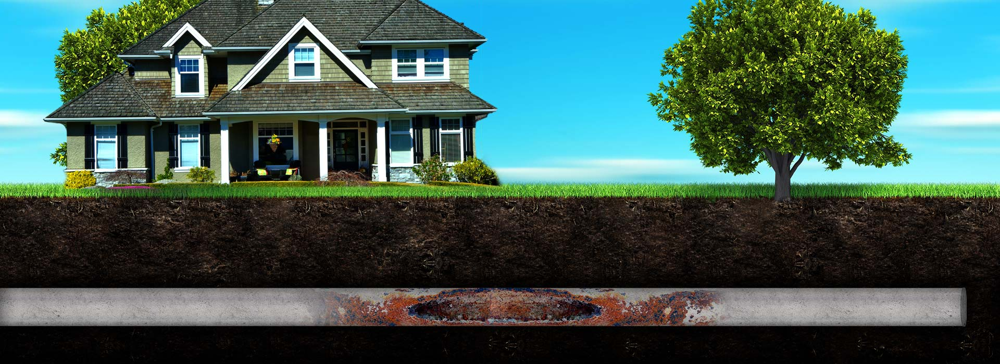

Most underground pipes and systems are more than 100 years old — and pipe failure isn't determined by age alone. The load running through a pipe has increased everywhere populations have grown. Traditional “dig and replace” upgrades are expensive and disruptive to businesses and communities.
Trenchless pipeline rehabilitation is a highly efficient, minimally invasive alternative: a new pipe is created within the existing pipe using a special epoxy, restoring function without excavation. It addresses leaks, breaks, blockages, root intrusion, calcium build-up, water damage, mold, sewer backups, and flow capacity — and it saves our customers time and money.
Cured-In-Place-Pipe (CIPP) is widely accepted for sanitary and storm sewers: a jointless, seamless pipe-within-a-pipe that lets us rehabilitate lines in congested and environmentally sensitive areas.

Lining is the right answer for most of the failure modes that take out buried pipe.
Cast iron and clay lines deteriorate over decades. Lining restores them in place.
Roots cause roughly half of all sewer blockages. A seamless liner locks them out.
Mineral build-up chokes flow capacity. Lining renews the full bore of the pipe.
Shifting soil cracks and separates joints. A jointless liner bridges the damage.
On commercial and municipal systems, CIPP means rehabilitating sanitary and storm sewers under parking lots, slabs, and rights-of-way without shutting down the property above them.
For homeowners, the same technology repairs a failing sewer line without trenching through an established yard — the landscape, driveway, and hardscape stay intact while the pipe underneath is renewed.

Cured-In-Place-Pipe is environmentally friendly.
The old pipe stays in the ground and becomes the host for the new one.
No excavation equipment tearing up and hauling away material for days.
Nothing is dug up, so nothing goes to the landfill.
Lining prevents heavy metals from leaching into drinking water.
2605 Decatur Highway, Gardendale, AL 35071 · M–F, 8:00 AM–4:00 PM